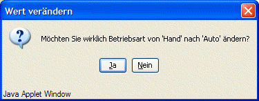

, um die Daten zur DDC-Station zu schicken.
, um die Daten zur DDC-Station zu schicken.Digitale Werte können auf einem Anlagenbild oder in der Geräteansicht auf einem Client eingestellt werden.
So stellen Sie einen digitalen Wert im Grafikmodus ein:
1 Rufen Sie das Anlagenbild auf, das den einzustellenden Wert enthält, wie im Abschnitt „Ein Anlagenbild anzeigen" in dieser Anleitung beschrieben,, und klicken Sie auf die Schaltfläche oder das Bild, das den zu ändernden Wert aktiviert.
oder
Rufen Sie den einzustellenden Wert in der Geräteansicht auf, wie im Abschnitt „Geräteansicht anzeigen" in dieser Anleitung beschrieben,, klicken Sie ihn mit der rechten Maustaste an, und wählen Sie dann im angezeigten Kontextmenü Wert verändern.
Das Dialogfenster Wert verändern wird nun angezeigt.

2 Klicken Sie auf Ja, um den Wert zu ändern, oder auf Nein, um ihn unverändert zu lassen.
Wenn Sie auf den 963 Server im Textmodus zugreifen, können Anpassungen nur über ein Anlagenbild erfolgen, wobei der Vorgang abweichend ist.
So stellen Sie einen digitalen Wert im Textmodus ein:
1 Rufen Sie das Anlagenbild mit dem zu ändernden Wert auf, wie im Abschnitt „Ein Anlagenbild anzeigen" in dieser Anleitung beschrieben.
2 Klicken Sie entweder auf Auf EIN setzen oder auf Auf AUS setzen.
3 Klicken Sie auf , um die Daten zur DDC-Station zu schicken.